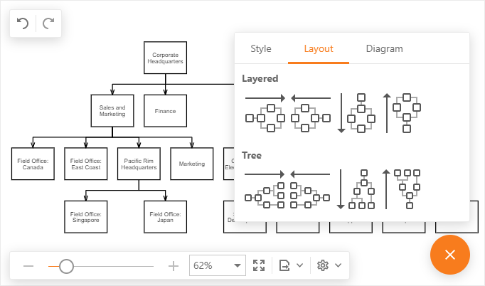
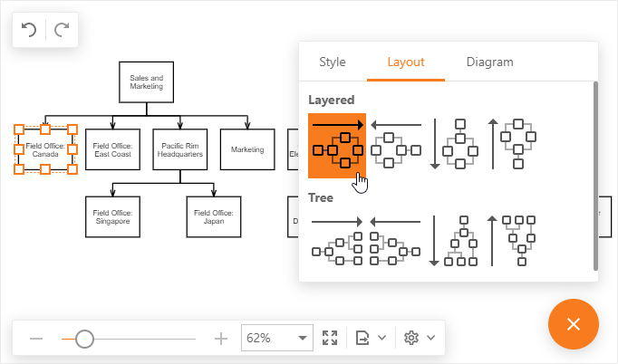

Chart Layout
The Diagram tool creates a chart layout based on predefined algorithms:
The Tree layout algorithm is used to draw hierarchical diagrams. It arranges shapes in a tree structure and aligns them based on their hierarchical level.
The Layered layout algorithm is used to draw layered graphs. It arranges shapes in horizontal rows or layers to reduce the number of connector crossings.
To select your chart's layout type and direction, click a layout command on the Properties > Layout tab.

If your document contains several unconnected charts, you can specify a layout for a particular chart. Select the chart's element (shape or connector) and click a layout command. The Diagram tool rebuilds the layout of a chart to which the selected element belongs.
